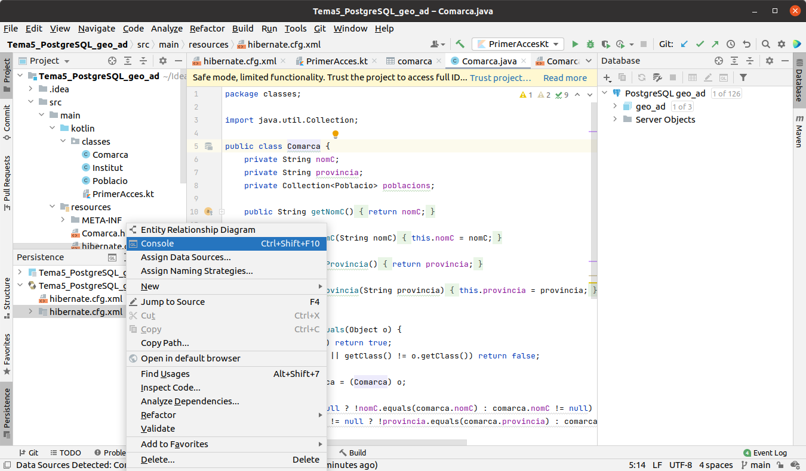
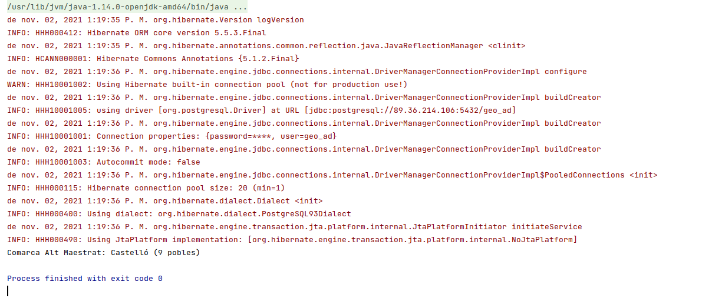
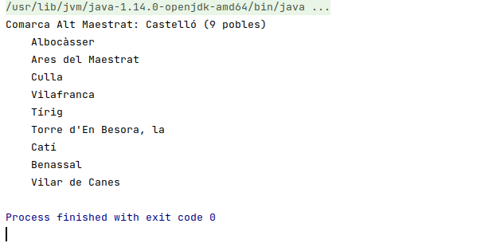

5 - Connexió a Hibernate
Des d'IntelliJ Idea no cal cap tipus d'instal·lació. Això sí, haurem d'utilitzar la versió ULTIMATE per a poder fer projectes que connecten a Hibernate.
Concretament seran projectes de tipus Jakarta EE , que és l'evolució de Java Enterprise , i com dèiem només estan disponibles en la versió Ultimate.
Durant aquest tema, cada connexió a una Base de Dades la farem en un projecte diferent, al contrari que en temes anteriors, on ho vam col·locar tot en el mateix projecte.
Aquestos projectes seran a més de tipus Maven , que es caracteritzen per no haver d'incorporar les dependències (Drivers) a mà, sinó que es reflecteixen automàticament en un fixter pom.xml , i ell s'encarrega de baixar tots els drivers necessaris. Ho farem així perquè, a diferència del que hem fet fins ara que hi havia pocs drivers a incorporar, per a Hibernate seran molts .jar, per tant és molt més còmode un projecte Maven, que ell s'encarregarà de baixartots els drivers necessaris
Els passos a seguir en cada projecte seran sempre els mateixos:
- Crear un projecte de tipus Jakarta EE(en versions anterior, Java Enterprise), amb la implementació de JPA per Hibernate
- Crear la connexió a la Base de Dades
- Afegir la configuració de persistència d'Hibernate, per a generar el fitxer hiernate.cfg.xml
- Mapejar les taules a classes
- Incorporar el Driver del SGBD a utilitzar (PostgreSQL en l'exemple)
- Acabar de configurar el fitxer hibernate.cfg.xml
El següent vídeo explica tot el procés de creació del projecte.
En versions anteriors, en el fitxer hibernate.cfg.xml no es guardava usuari ni contrasenya, i després li feia falta el dialecte de PostgreSQL. Concretament s'havien d'afegir les següents línies:
<property name="connection.username">geo_ad</property>
<property name="connection.password">geo_ad</property>
<property name="hibernate.dialect">org.hibernate.dialect.PostgreQL93Dialect</property>
I observeu que en aquest exemple hem optat per incorporar el Driver directament, ja que el teníem des del tema passat. Podríem haver optat també per incorporar-lo a l'estil Maven, que seria senzillament incorporar en el fitxer pom.xml en l'apartat de <dependencies> la següent. Atenció: si ja heu incorporat el Driver de PostgreSQL al projecte, no cal que fey el que va a continuació
<dependency>
<groupId>org.postgresql</groupId>
<artifactId>postgresql</artifactId>
<version>42.2.24</version>
</dependency>
I aquestes són les dades de connexió a la Base de Dades geo_ad de PostgreSQL :

Si la connexió fóra a MySQL la BD factura , recordem que les dades de connexió serien:

I fins i tot podem mapejar les taules d'una Base de Dades SQLite , amb una connexió com aquesta:

5.1 - HQL: consultes senzilles
Podem provar consultes senzilles de HQL, que és el llenguatge propi de HQL, paregut a SQL, però utilitzant objectes.
Ho podem fer obrint una consola d'Hibernate, des de la finestra de Persistència, dins de la configuració d'Hibernate sobre hibernate.cfg.xml , i amb el botó de la dreta triar Console

S'obrirà un apartat a la part de baix, i com que la connexió és sobre la que havíem fet en la Base de Dades, si en la finestra Database estem connectats, podrem fer les consultes HQL. La primera podria ser aquesta from Comarca. Hem de respectar escrupulosament majúscules i minúscules, ja que en definitiva estem accedint a les classes Java.

5.2 - Començant a programar
Com que hem fet un projecte Maven, totes les llibreries necessàries estaran ja incorporades.
I si ja hem incorporat el Driver de PostgreSQL, bé directament tal com feem en el Tema 4, bé incorporant la dependència en el fitxer pom.xml, aleshores ja estem en condicions de començar a programar.
Tots els programes que farem, els posarem dins del paquet exemples , que ha d'estar dins de src - > main -> kotlin. Aquest primer programa el podem guardar amb el nom Exemple_01_PrimerAcces.kt :
package exemples
import org.hibernate.cfg.Configuration
import classes.Comarca
fun main(args: Array<String>) {
val sf = Configuration().configure().buildSessionFactory()
val sessio = sf.openSession()
val com = sessio.get("classes.Comarca", "Alt Maestrat") as Comarca
print("Comarca " + com.nomC + ": ")
print(com.provincia)
println(" (" + com.poblacions.size + " pobles)")
sessio.close()
}
L'execució ens haurà donat molts avisos, que són un poc pesats, però l'execució (la línia en negre quasi al final) ha eixit bé

El programa a carregat la comarca de l'Alt Maestrat, i ens ha dit la província i el número de pobles
Anem a llevar aquetsos missatge, que són únicament de INFO. Senzillament li direm que mostre únicament els errors severs.
LogManager.getLogManager().getLogger("").setLevel(Level.SEVERE)
Aprofitarem per a canviar un poc el programa, i ara traurem també el nom dels pobles de la comarca Alt Maestrat. Així veiem també el potencial, ja que és comodíssim accedir els pobles de la comarca. Guardeu el següent programa amb el nom Exemple_02_SegonAcces.kt :
package exemples
import classes.Comarca
import org.hibernate.cfg.Configuration
import java.util.logging.Level
import java.util.logging.LogManager
fun main(args: Array<String>) {
LogManager.getLogManager().getLogger("").setLevel(Level.SEVERE)
val sessio = Configuration().configure().buildSessionFactory().openSession()
val com = sessio.get("classes.Comarca", "Alt Maestrat") as Comarca
print("Comarca " + com.nomC + ": ")
print(com.provincia)
println(" (" + com.poblacions.size + " pobles)")
for (p in com.poblacions)
println("\t" + p.nom)
sessio.close()
}
I aquest serà el resultat:

Llicenciat sota la Llicència Creative Commons Reconeixement NoComercial CompartirIgual 2.5